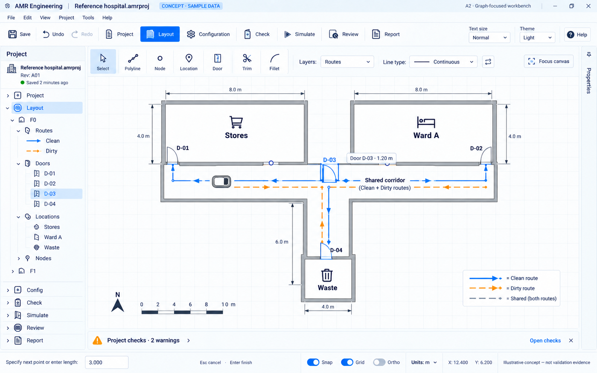
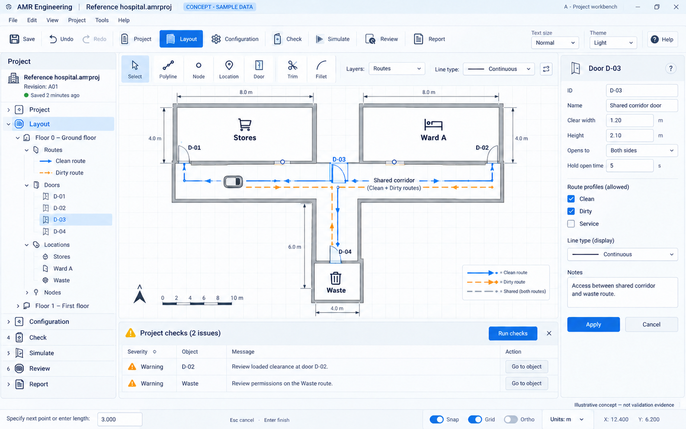
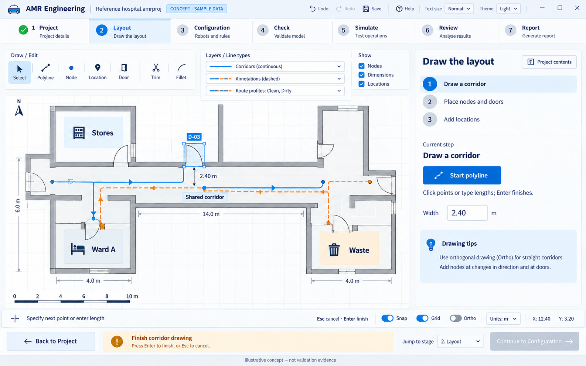
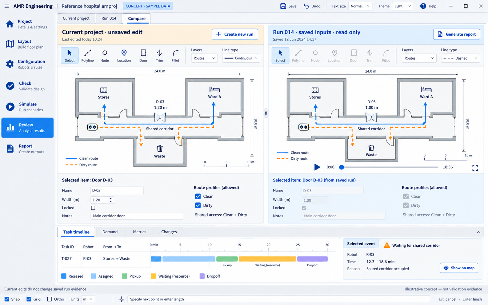
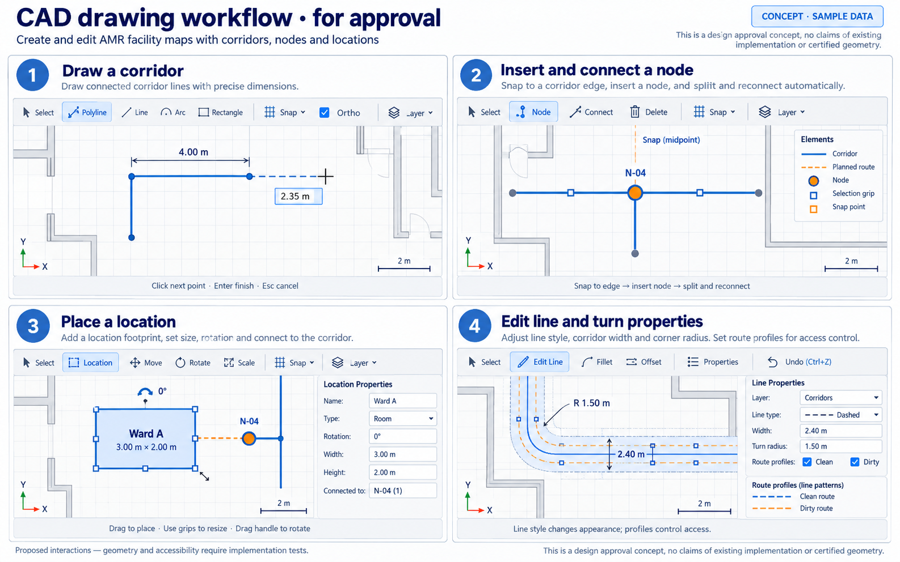

DESIGN REVIEW · ILLUSTRATIVE CONCEPTS
AMR Engineering: a graph-focused CAD workbench
The graph takes the majority of the view. Side and bottom panels provide supporting information without overcrowding it. Detailed interactions remain for review. Implementation is paused.
A2 · Approved graph-focused direction
A slim project tree, compact drawing tools and a dominant canvas. Properties and checks stay collapsed until needed. Panel behaviour and shortcuts will be reviewed in a prototype after the core-feature completion gate.

A · Original workbench
The chosen workbench style with expanded properties and checks. A2 improves the default drawing space.

B · Guided workspace
Retained for comparison. Step-by-step guidance may inform the tutorial; this is not the selected application shell.

C · Comparison workspace
Retained as an idea for optional results investigation. Current editable inputs and read-only saved runs stay distinct.

CAD interaction review
Polyline drawing, snapping, node insertion, location footprints and dimensional editing need familiar, undoable interactions. Line styling is presentation; route profiles govern access.
